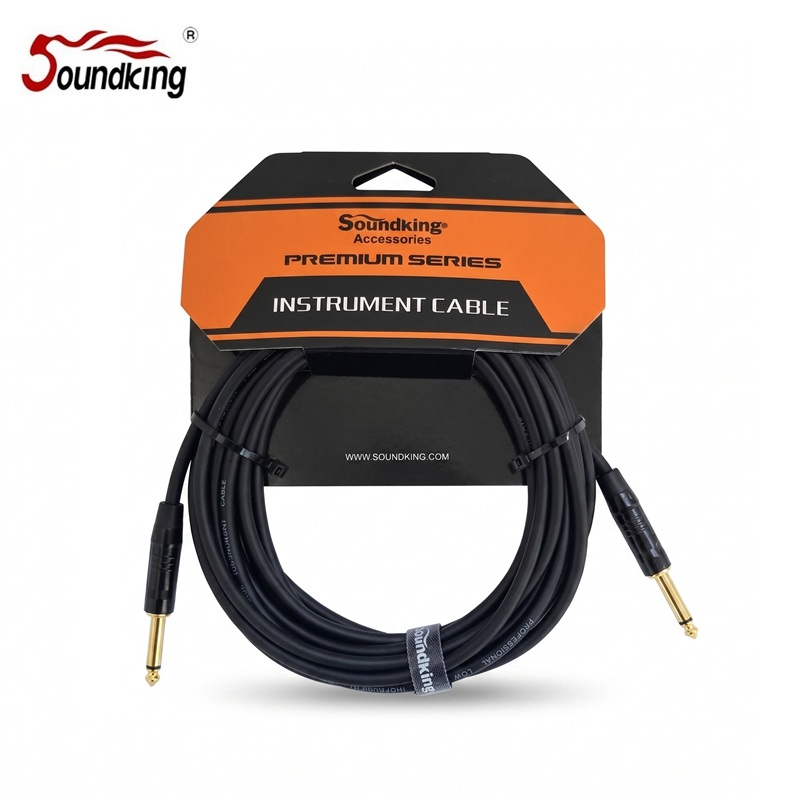

BJJ286은 Soundking GA302 악기용 벌크 케이블 양단에 Soundking CJ2M025BB 1/4" TS(6.35mm Mono) 커넥터를 장착한 완제품 케이블입니다. 99.99% OFC(Oxygen-Free Copper, 무산소동) 도체를 사용하며, Φ0.12mm OFC × 20심(0.23mm²) 단심 신호선 · LDPE Φ2.2mm 절연 · 도전성 PVC(Conductive PVC) + Φ0.12mm OFC × 64심 스파이럴 이중 차폐로 ≥90%의 차폐율을 확보합니다. 일렉기타 · 베이스 · 키보드 · 신디사이저 등 언밸런스드 악기 신호 전송에 적합한 표준 구성입니다.

6.35mm TS Mono 커넥터를 양쪽에 적용한 악기용 완제품 케이블 · 3M / 5M 2종 운영.
| 길이 | 소비자가 (VAT 포함) | 비고 |
|---|---|---|
| 3M | 17,600원 | 완제품 (TS-TS) |
| 5M | 19,800원 | 완제품 (TS-TS) |
Soundking BJJ286은 Soundking GA302 악기용 벌크 케이블 양단에 Soundking CJ2M025BB 1/4"(6.35mm) TS Mono 커넥터를 장착한 언밸런스드 악기용 완제품 케이블입니다. 동일 브랜드의 전용 케이블과 커넥터 조합으로, 악기 출력 잭과 앰프 · 이펙터 입력 잭에 그대로 연결할 수 있는 표준 구성입니다.
내부 GA302 케이블은 99.99% OFC(Oxygen-Free Copper, 무산소동) 도체를 사용합니다. Φ0.12mm OFC × 20심(0.23mm², ≈AWG 23) 단심 신호선 · LDPE Φ2.2mm(White) 절연체 · 도전성 PVC(Conductive PVC) + Φ0.12mm OFC × 64심 스파이럴의 이중 차폐 · Flexible PVC Φ6.0mm 자켓으로 구성됩니다. 도체 저항은 100m당 ≤9.1Ω, 차폐율은 ≥90%로 라이브 · 연습 환경에서 요구되는 차폐 성능을 확보합니다. 사용 온도 범위는 -20℃ ~ 70℃입니다.
Soundking BJJ286 악기용 케이블 이미지입니다.
BJJ286 악기용 케이블의 핵심 포인트입니다.
BJJ286에 사용된 Soundking GA302 벌크 케이블의 내부 구조입니다. 바깥 Flexible PVC 자켓 → 99.99% OFC 스파이럴 실드 → 도전성 PVC → LDPE 절연 → 99.99% OFC 단심 연선 순서로 적층되어 있습니다.
| ① 외피 (Jacket) | Flexible PVC · Φ6.0mm | 블랙 (Black) · 굴곡 · 내마모 |
| ② 실드 (Shield) | 99.99% OFC Φ0.12mm × 64심 스파이럴 | ≥90% 차폐율 |
| ③ 내부 차폐 | 도전성 PVC (Conductive PVC) | 핸들링 · 정전기 소음 억제 |
| ④ 절연 (Insulation) | LDPE Φ2.2mm · White | 저밀도 PE · 낮은 유전상수 |
| ⑤ 신호선 (Conductor) | 99.99% OFC Φ0.12mm × 20심 · 0.23mm² (단심) | AWG 23 상당 · ≤9.1Ω/100m |
바깥쪽 Flexible PVC 자켓이 물리적 충격과 마모로부터 케이블을 보호하고, 99.99% OFC Φ0.12mm × 64심 스파이럴 실드가 외부 EMI · RFI를 1차 차단합니다. 그 안쪽의 도전성 PVC 층은 악기 케이블에서 흔히 발생하는 핸들링 노이즈(Microphonic / Triboelectric)와 정전기 소음을 추가로 억제합니다. LDPE Φ2.2mm 절연체는 신호선의 전기적 특성을 안정화하여 고역 손실을 억제합니다. 100m당 크로스토크는 최소 73.3dB로 확보됩니다.
음향 케이블에 사용되는 구리 도체의 종류별 특성과 가격대를 비교합니다. BJJ286은 99.99% OFC 도체를 사용합니다.
| 항목 | CCA | CCAM | OFC (BJJ286) | OCC |
|---|---|---|---|---|
| 정식 명칭 | Copper Clad Aluminum | Copper Clad Aluminum Magnesium | Oxygen-Free Copper | Ohno Continuous Casting |
| 구리 순도 | — | — | 99.99% | 99.9999%+ (6N) |
| 전도성 | ★★☆☆☆ | ★★★☆☆ | ★★★★☆ | ★★★★★ |
| 내산화성 | ★★☆☆☆ | ★★★☆☆ | ★★★★☆ | ★★★★★ |
| 기계적 강도 | ★★☆☆☆ | ★★★☆☆ | ★★★☆☆ | ★★★★☆ |
| 무게 | 가벼움 | 가벼움 | 보통 | 보통 |
| 주요 용도 | 임시 배선 소모품 | 교회·학교 일반 행사 | 프로 공연 악기 · 레코딩 | 하이엔드 마스터링 |
BJJ286 완제품은 Soundking GA302 벌크 케이블과 CJ2M025BB 커넥터 2개의 조합입니다. 아래는 내부 GA302 케이블의 공식 데이터시트 사양입니다.
| 제품 모델 | BJJ286 (완제품) |
|---|---|
| 구성 | Soundking GA302 케이블 + CJ2M025BB 커넥터 ×2 |
| 브랜드 | Soundking |
| 제품 유형 | 악기용 완제품 케이블 (Instrument Cable) |
| 커넥터 | 1/4" TS Mono · CJ2M025BB (양단 동일) |
| 연결 방식 | Unbalanced (언밸런스드 / TS) |
| 내부 케이블 | Soundking GA302 |
| 도체 (Conductor) | 99.99% OFC (Oxygen-Free Copper, 무산소동) |
| 신호선 (Inner conductor) | 99.99% OFC Φ0.12 × 20심 (단심) |
| 신호선 단면적 | 0.23 mm² (≈AWG 23) |
| 절연 (Conductor Isolation) | LDPE Φ2.2mm |
| 절연 색상 | White |
| 차폐 1 (Shielding 1) | Conductive PVC (도전성 PVC) |
| 차폐 2 (Shielding 2) | 99.99% OFC Φ0.12 × 64심 스파이럴 |
| 차폐율 | ≥ 90% |
| 외피 (Outer jacket) | Flexible PVC |
| 외피 색상 | 블랙 (Black) |
| 외경 (Outer dimensions) | Φ6.0mm |
| 사용 온도 | -20℃ ~ 70℃ |
| 도체 저항 (Lead resistance) | ≤ 9.1 Ω / 100m |
| 크로스토크 (Crosstalk) | ≥ 73.3 dB / 100m |
| 국내 판매 단위 | 완제품 · 3M / 5M 2종 |
| 소비자가 (VAT 포함) | 3M: 17,600원 · 5M: 19,800원 |
※ 내부 케이블 사양 출처: Soundking GA302 공식 데이터시트. 국내 판매 구성(3M · 5M)과 소비자가는 현대에이브이씨 기준입니다. Soundking 공식 페이지: soundking.com/products/details/bjj286.html
오디오 케이블의 신호 전송 방식에는 밸런스드(Balanced)와 언밸런스드(Unbalanced) 두 가지가 있습니다. BJJ286은 1/4" TS(Tip-Sleeve) 구조이므로 언밸런스드(Unbalanced) 케이블입니다.
BJJ286의 대표적인 활용 분야입니다.
BJJ286과 함께 구성하거나 대체할 수 있는 제품입니다.